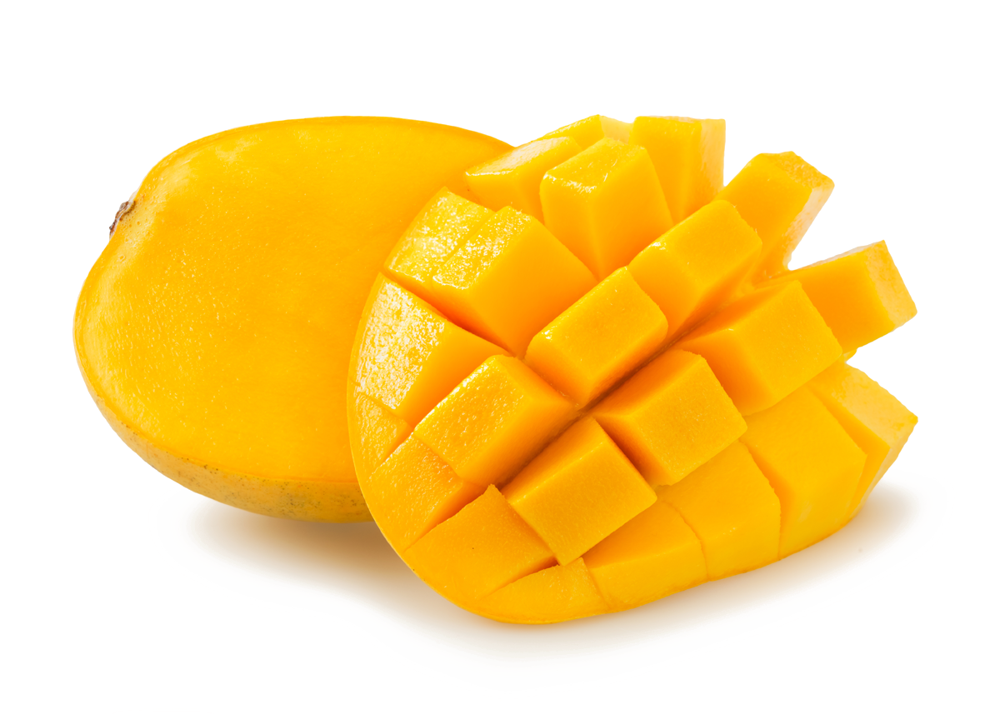
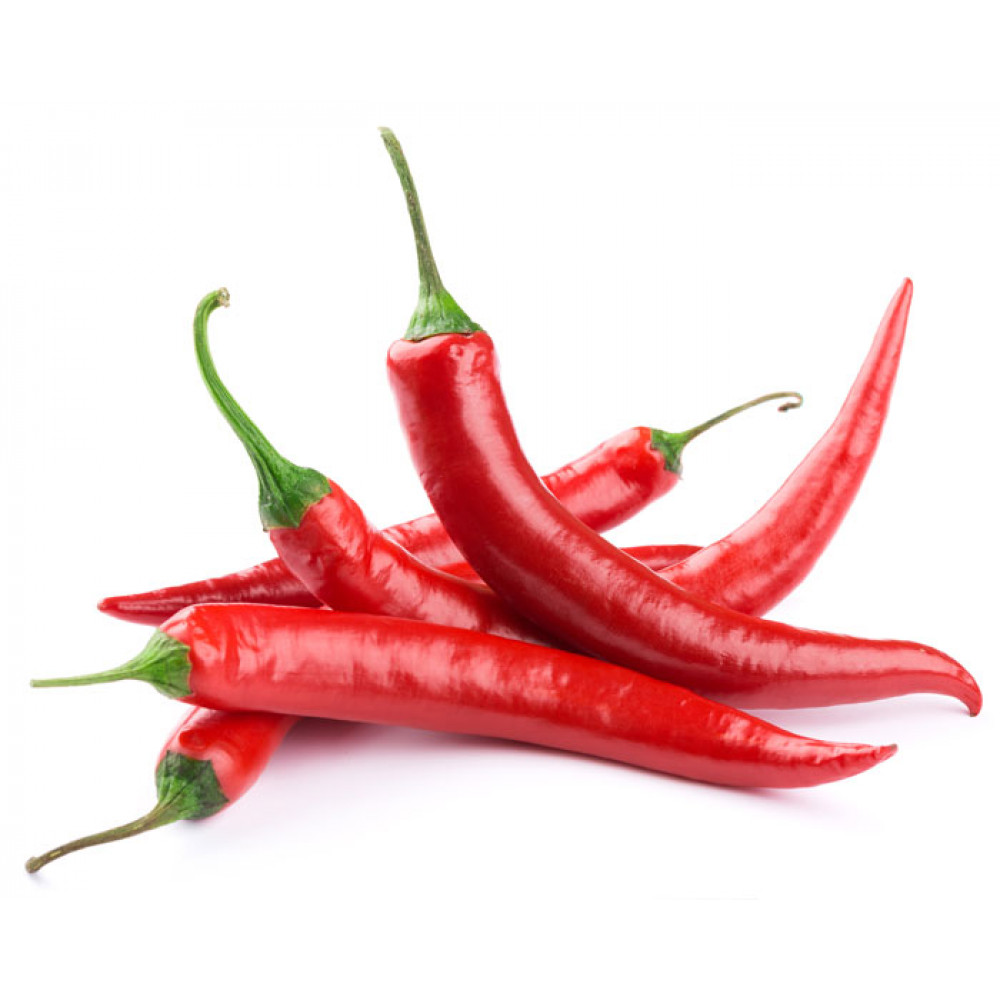
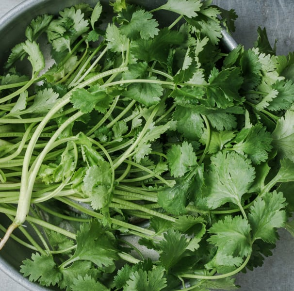
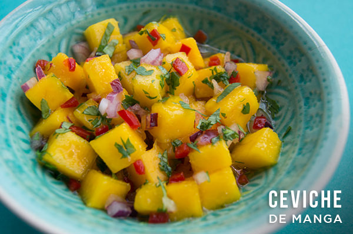

Ceviche de Manga e Cebola Roxa
Uma versão tropical e refrescante. A doçura da manga madura contrasta com a acidez do limão e o toque picante da cebola roxa.
Ingredientes:
-

2 mangas maduras, em cubos -
 1 cebola roxa média, fatiada
1 cebola roxa média, fatiada
-
 Suco de 3 limões
Suco de 3 limões
-

1 pimenta dedo-de-moça, picada -
 Sal e pimenta-do-reino a gosto
Sal e pimenta-do-reino a gosto
-

Coentro fresco picado

Modo de Preparo
- Em uma tigela grande, misture as mangas, a cebola roxa e a pimenta.
- Adicione o suco de limão. O suco ajudará a "cozinhar" os ingredientes, dando a textura de ceviche.
- Tempere com sal e pimenta-do-reino. Misture bem para incorporar os sabores.
- Cubra com filme plástico e leve à geladeira por 30 minutos.
- Antes de servir, ajuste o tempero e decore com o coentro fresco.
- Sirva gelado, acompanhado de tortilhas ou como entrada.